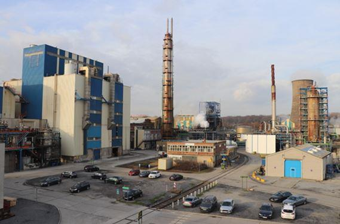
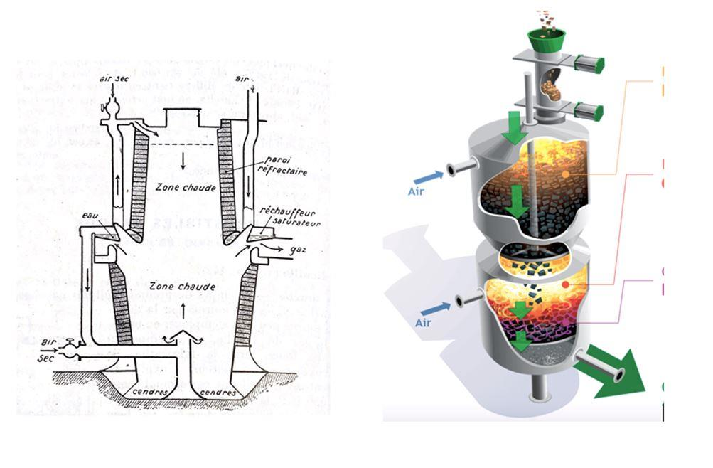

Selon Louis-Ferdinand Céline l’histoire ne repasse pas les plats. La technologie par contre, le fait. Les résultats de la plupart des thèses de doctorat en chimie ne débouchent pas nécessairement sur des applications, pour de multiples raisons qui ne sont pas l’objet de cette réflexion. Mais les enseignements qu’on en tire encouragent à poursuivre la recherche. Le chercheur scrupuleux étudie à fond la bibliographie de son sujet pour ne pas négliger des conclusions négatives d’autres chercheurs. Tout cela demande du temps et de l’investissement. C’est le prix à payer pour progresser en science. Mais les principes chimiques et physiques eux ne changent pas.
On le voit par exemple avec ce que nous vivons pour l’instant avec la stratégie hydrogène1 de la Commission européenne. On voudrait faire croire qu’il va être possible de produire économiquement et industriellement de l’hydrogène à partir de l’énergie éolienne ou solaire. Depuis plus d’un siècle2, on sait que la production d’hydrogène par l’électrolyse de l’eau ne peut pas être aussi bon marché que celle par craquage des hydrocarbures. Les équations chimiques montrent de manière irréfragable que produire une mole (ou 1 kg) d’hydrogène à partir d’eau exige sept fois plus d’énergie qu’à partir du gaz naturel3. Une quelconque stratégie hydrogène ne changera jamais cette relation qui découle de la science. Il y aura certes des améliorations — c’est la moindre des choses étant donné tout l’argent qu’on va investir — mais celles-ci seront marginales et ne seront pas des ruptures qui débouchent sur une nouveauté. La technologie repasse bien les mêmes plats, sauf à changer de technologie.
Hélas, ces dernières années nous assistons à un contrôle de plus en plus invasif du politique dans le domaine de l’énergie. On voudrait que les choix — au demeurant parfois politiquement justifiés — deviennent des réalités technologiques. Prenons l’exemple de Xylowatt, une spin-off de l’Université catholique de Louvain, qui prétendait, comme son nom l’indique, produire de manière économique de l’électricité et de la chaleur par la gazéification de bois.
L’objectif est louable. Sauf qu’il y a plus d’un siècle qu’on a essayé de le faire et que cela a été abandonné. La gazéification du charbon a été largement employée à la fin du 19e et durant la première partie du 20e siècle pour produire des composés chimiques ; on appelait cela la carbochimie. La Société Carbochimique4 a été fondée en 1928 à Tertre -et rachetée par l’entreprise norvégienne Yara, Tertre est encore aujourd’hui un pôle chimique-, près de Mons.
La gazéification consiste à chauffer du bois ou du charbon en le faisant réagir avec de la vapeur d’eau pour obtenir un mélange de gaz qui contient de l’hydrogène. Mais on obtient, aussi des goudrons et surtout un résidu solide qui représente en fait la masse principale des produits. Ces sous-produits sont très difficiles à manipuler et sont une source de pollutions. On peut réaliser la gazéification sans utiliser de la vapeur d’eau, mais avec de plus mauvais rendements : on appelait cela au début du 20e siècle le gaz à l’air, qui servait notamment à illuminer les lampions des villes. Tout cela a été abandonné avec l’avènement du pétrole et du gaz naturel.

Figure 1. A gauche un gazogène à l’air Westinghouse (source : Paul Baud, Chimie industrielle, Masson 1922, page 164). A droite le réacteur NOTAR de Xylowatt
Après les chocs pétroliers de 1973 et 1979, on a revisité toutes ces technologies, car on pensait que le charbon — abondant, bon marché et sans implication géopolitique — allait être l’énergie de l’avenir en produisant du pétrole et du gaz de synthèse. On a assisté alors pour la liquéfaction et la gazéification du charbon à la même frénésie que l’on vit présentement pour les énergies renouvelables. Ce fut l’objet de ma thèse de doctorat et de la première partie de ma carrière à la Direction générale énergie de la Commission européenne. Tout fut abandonné à la fin des années 1980, lorsqu’on comprit que le Club de Rome nous avait trompés5 en proclamant qu’il n’y aurait bientôt plus de pétrole et que les interventions des pays arabo-musulmans sur les marchés pétroliers étaient une punition de l’Occident pour ne pas avoir pris ses distances avec Israël6.
La volonté de produire de l’énergie renouvelable a relancé l’utilisation du bois comme source d’énergie et la gazéification des combustibles solides est revenue à l’ordre du jour. En anglais, goudron se dit tar. C’est pourquoi Xylowatt a donné à son réacteur le nom de NOTAR, ce qui n’a rien à voir avec les notaires. Le nom est bien choisi parce que les goudrons sont une tare dans un processus industriel, tant pour l’impact environnemental et sur la santé que pour leur manipulation. Bien que comme le montre la Figure 1 le principe du réacteur n’a rien d’innovant, les quelques améliorations objectives qui y ont été apportées, notamment pour séparer les différentes zones du réacteur, ont permis à la spin-off de démarrer en 2001 avec un premier gazéifieur. Plusieurs installations ont été vendues en Belgique et en France.
Le projet a été présenté comme un fleuron énergétique de la Wallonie ce qui lui a permis d’obtenir des crédits wallons (SRIW et SFPI) et européens (programme Life de la Direction générale environnement). Il a été reconnu comme l’une des 1 000 solutions efficaces sélectionnées par la Fondation Solar Impulse7 ce qui était censé prouver sa rentabilité économique. La suite va montrer que l’on doit se méfier des labels octroyés par des sympathisants (asinus asinum fricat). L’enthousiasme a attiré plusieurs industriels ; en 2014, Air Liquide et John Cockerill (alors CMI) entrent au capital de l’entreprise. Des investisseurs y ont également cru.
Au début des années 1990, la Commission européenne a voulu lancer un grand projet de démonstration de gazéification de biomasse, appelé projet ciblé, qui a attiré de nombreux industriels, mais il s’est terminé par un échec. Il y a une dizaine d’années, j’avais été approché par un membre de l’équipe Xylowatt. J’avais présenté et argumenté mon scepticisme, mais l’enthousiasme l’a finalement emporté. À la même époque, la plateforme PIC‑W financée par l’AWEX s’était également intéressée à cette technologie innovante en vue d’accéder au marché chinois. On m’avait consulté, et j’avais donné un autre avis négatif. En avril 2012, j’avais accompagné des députés européens à Vaasa (Finlande) pour visiter les laboratoires du grand groupe énergétique Wärtsilä. L’entreprise était fière de montrer son gazéificateur et les nombreux troncs d’arbres près à être traités. Je lui avais dit ma surprise qu’un groupe industriel aussi réputé se perde dans une telle technologie, mais arguant que la Finlande possède beaucoup de bois, elle pensait que la gazéification du bois allait devenir une industrie économique. Aujourd’hui, Wärtsilä a abandonné la gazéification du bois.
On ne peut se réjouir de la faillite d’une entreprise et encore moins de la déception de ceux qui y ont cru et travaillé avec sérieux et enthousiasme. Mais il a fallu finir par admettre que cette technologie ne pouvait pas avoir un avenir industriel. Xylowatt a été forcée de faire aveu de faillite il y a quelques semaines.
Pourquoi ? Parce que les industriels concernés ont ignoré l’histoire de la gazéification et que des améliorations à la marge ne peuvent en changer les fondamentaux. Même les grandes installations de gazéification du charbon ont été abandonnées par tous. À plus forte raison, celle reposant sur la biomasse ne peut avoir d’avenir, car le bois et la biomasse en général contiennent des composés oxygénés (groupes carboxyles) qui produisent beaucoup plus de sous-produits et de goudron que ne le fait le charbon. De plus, en génie chimique, la taille des installations est déterminante, car si elle est grande elle permet de réduire fortement le prix de revient (c’est pourquoi les industries chimiques sont souvent très grandes). Or le bois ayant un pouvoir calorifique faible ne justifie pas son transport sur des longues distances (celui qui se chauffe au bois à Bruxelles sait qu’il ne doit pas acheter du bois dans les Ardennes, même s’il est nettement moins cher sur place). En conséquence, les installations ne peuvent être que de petites tailles parce que la disponibilité du bois dans un rayon raisonnable est forcément limitée. Cela conduit à un prix de revient élevé.
Il y a une autre raison, plus générale. En matière d’énergie, il convient de penser de manière systémique. Les chercheurs de Xylowatt, comme ceux d’autres domaines spécialisés de l’énergie, font un travail méticuleux, précis et correct. Mais trop souvent, ils perdent de vue le système énergétique mondial. En l’occurrence, disposer d’une technologie et de bois à proximité pourrait être une solution dans un monde fermé. Mais le système énergétique est mondial et les prix doivent donc tenir compte de la réalité mondiale.
Le plus étrange est que de grands industriels aient pu croire que l’on pouvait négliger l’histoire technologique dans ce domaine. Ces mêmes industries courent aujourd’hui derrière l’utopie de l’hydrogène8 dont on sait pourtant depuis un siècle qu’elle n’a aucun sens économique. Ce n’est pas parce que le professeur de chimie a réalisé une électrolyse de l’eau et produit un peu d’hydrogène qu’il a fait exploser dans la classe que cela est compatible avec le système énergétique mondial.
Hélas les exemples s’accumulent, et les financements publics dans ces domaines utopiques vont s’amplifiant au lieu de tarir. On pourrait envisager que les pouvoirs publics remplacent le financement de la recherche au travers de ces projets, par une aide au fonctionnement de la recherche (exonération des charges sur les chercheurs, achat d’infrastructures, meilleur financement des universités). Ce serait à la fois plus économique et plus efficace.
Nous devons observer que depuis le début de ce siècle nous vivons dans la précipitation énergétique. Nous l’avons dit plus haut, depuis les années 1970 on tente de trouver des solutions à la question énergétique. Nous sommes restés dans un monde qui dépend à plus de 80 % des énergies fossiles. Avec Ernest Mund, nous avons montré que la transition énergétique demande du temps, l’unité de mesure étant grosso modo le siècle9. Les exemples que nous avons montrés résultent de la précipitation sous la pression politique et des médias, et du manque d’attention aux raisons des échecs technologiques du passé. La science demande du temps et l’analyse du passé.
Partager cette page